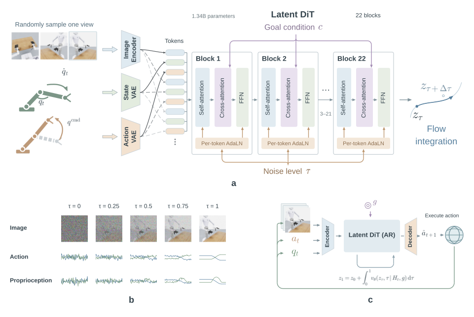
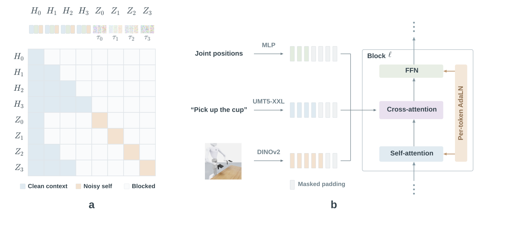
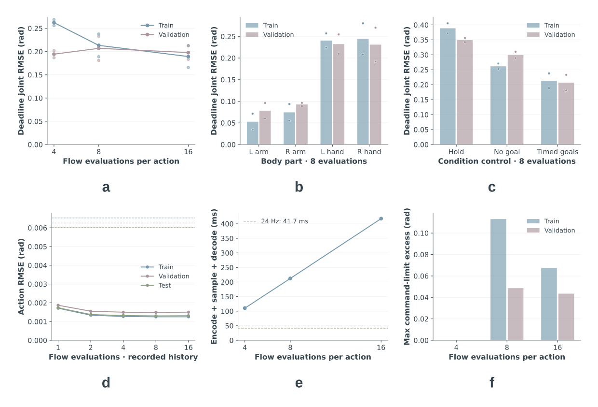
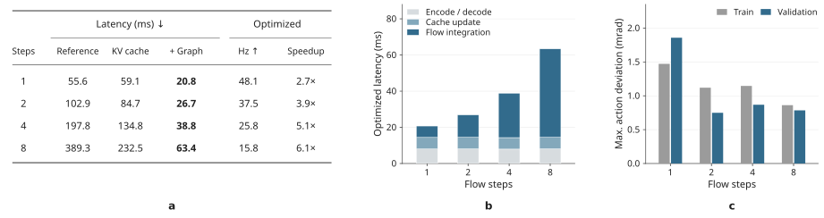
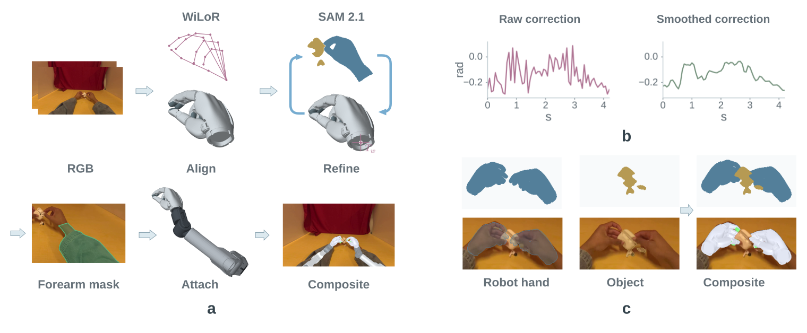
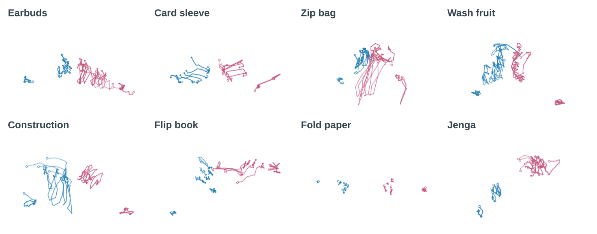

Ongoing project October 2026
A Tiny World Action Model
Compact tokens for goal-conditioned robot motion.
Tiny-WAM explores a compact visual and motor representation for a small reaching task in simulation. A separate pipeline fits robot hands and arms to human demonstration videos.
About
This post brings together my thoughts on world models and an attempt to build one for a small robotic task. I first discuss what I think these models should learn, then describe Tiny-WAM, a latent DiT that predicts images, joint states, and actions using a compact representation. I also present our pipeline for retargeting human demonstrations to robot hands and arms, as a separate effort toward a more varied training dataset. This is an ongoing project, and the post includes both the current results and the questions they leave open.
Intro
Suppose you want to go to the kitchen and make yourself a cup of tea. You probably know immediately where to go. If you close your eyes and think a little harder, you can also vaguely imagine what you’ll see as you approach the kitchen and where you keep the tea bags and mugs. This ability to imagine what comes next is part of the motivation behind world-model approaches such as Dreamer [1] by Danijar Hafner and colleagues and World Models [2] by David Ha and Jürgen Schmidhuber.
I became interested in this idea during my master’s because it felt so intuitive and connected naturally to control, neuroscience, and ML. In control, MPC tests action sequences in a model before taking a step and replanning [3]. In neuroscience, internal forward models explain how we might anticipate our movements before sensory feedback arrives [4]. In cognitive science, intuitive-physics models suggest we judge whether objects will fall by mentally simulating what happens next [5]. In RL, Sutton’s Dyna learns from both real and simulated experience [6]. This predictive setup also offers a practical advantage for training large models. In its simplest form, we learn to predict the next observation from the current observation and action . The next observation itself provides the training target, much like the next token in an LLM, reducing the need for manual annotation. Unlabeled videos can therefore support observation prediction, while learning the effects of particular actions also requires information linking actions to outcomes.
Three and a half years later, I think that same intuitive appeal has also become a weakness. “World model” now covers so many ideas that its purpose can become unclear. A common approach is to add action conditioning to a pretrained video model, as in LingBot-VA [7]. The motivation makes sense. Generating convincing video should require learning something about world dynamics. But in my experience, too much compute goes into visual detail that contributes little to control. Making these models practical then requires fewer denoising steps, distillation, and autoregressive generation, as in DreamDojo [8]. For a narrow robotic task, I wanted to try a deliberately overfitted world model. Tiny-WAM uses one token per image, preserves 24 Hz observations without temporal compression, and uses a conventional latent DiT with cross-attention goal conditioning. I trained it on a small reaching task in simulation using up to six RTX 4090s. After inference optimization, it runs at 25.8 predictions per second on one 4090 with four flow steps, including encoding and action decoding but excluding acquisition and simulation. This is an attempt to understand how much world modeling a small task actually needs.
A compact model of observations and actions
Our starting question is whether a robot can learn a useful predictive model while representing each image with a single token. We study this in a deliberately restricted setting: an R1 robot with two ISyHands, learning from its own simulated motion and receiving future joint positions as goals. The immediate objective is to reproduce local action dynamics and test whether the same model can guide motion toward those goals. This setting makes it possible to examine representation, conditioning, and execution before introducing the diversity of a general manipulation dataset.
The model has three requirements. It must preserve the temporal ordering between observations and commands, represent visual and motor information at a common time resolution, and distinguish what has already been observed from what remains to be predicted. We implement these requirements using modality-specific encoders and a shared latent DiT (Figure 1). The architectural components are conventional; the choices under investigation are the compact representation, the information available to each prediction, and the use of timed goals.
One token per modality, at every observation
Let denote the camera image, the measured joint state, and the commanded joint positions. The robot has 48 actuated joints. Commands are applied after observations, so affects and . A five-second training window contains 121 observations and 120 commands at 24 Hz. We sample one of the three camera views for each window and retain that view throughout the sequence.
We encode these quantities as
The image encoder uses DC-AE [9] to obtain a 2,048-dimensional vector. Separate Fourier-based VAEs encode state and action into 512-dimensional vectors. The encoders remain frozen during DiT training, and we use deterministic encodings. Each normalized latent is projected to the Transformer width and receives a learned modality embedding. Thus, each time point contributes up to three tokens, rather than a spatial grid of image patches.
The compression is spatial, not temporal. Every recorded time point remains available to the model, and image, state, and action tokens share its timestamp. This choice gives the model direct access to changes at the 24-Hz observation rate. It also places a strong burden on the image encoder: details discarded by the bottleneck cannot be recovered by allocating more attention to the image later. Whether this representation retains enough information for fine contact is an empirical question beyond the reaching experiments below.
For scale, Wan2.1 [10] uses an image VAE with an eightfold spatial reduction followed by latent patches. At the same image resolution, this produces 256 visual tokens per latent time slice. Its temporal encoder compresses four subsequent frames into one slice, with the first frame encoded separately. Tiny-WAM instead uses four visual tokens for those four frames. This is a comparison of tokenization, not a measured compute ratio between the two models.

Figure 1. A compact latent model and its use in feedback. a, A camera view is sampled once per window. Image, state, and action encoders produce one token per modality and time point. The 22-block DiT uses goal cross-attention and per-token noise modulation; the curve illustrates flow integration in latent space. b, Noise-to-data interpolations for images, actions, and proprioception. Curves show separately normalized arm and hand channels; these are explanatory illustrations, not sampled model outputs. c, One-step-ahead action prediction. The decoded command is executed, and subsequent predictions use measured images and joint states together with the committed action. Generated image and state predictions are discarded in this feedback experiment.
A shared Transformer for visual and motor prediction
We use a 22-block DiT with 1.339 billion parameters, a width of 2,048, 16 attention heads, and a SwiGLU feed-forward width of 4,096. Each block contains masked self-attention, cross-attention to the goal condition, and a feed-forward layer. The design follows the latent DiT formulation [11], with noise modulation informed by Wan [10]. Separate output heads predict updates in the image, state, and action latent spaces.
The word “tiny” describes the scope of the experiment and the number of tokens, rather than a minimal parameter count. We keep a substantial Transformer while reducing the information it must process at each time point. This separates the question of a compact predictive interface from the further question of how small the network itself could become.
Quantity | Representation |
|---|---|
Image | ; 1 token/frame, 1 sampled view/window |
Proprioception |
|
Action |
|
Sequence | 5 s at 24 Hz; 121 observations, 120 actions; no temporal compression |
Transformer | 22 blocks; ; 16 heads; 1.339B parameters |
Goal condition |
|
Learning conditional transitions
A compact representation alone does not specify what the model learns. In particular, predicting an action from a recorded sequence is only meaningful if the model cannot read the answer through another token. We therefore define the training objective together with its information constraints.
Flow matching with independently corrupted frames
We train with conditional flow matching [12] along a straight interpolation between Gaussian noise and data, as in rectified-flow models [13]. For a modality , the noisy input and target velocity are
Here indexes the recorded sequence, while describes the amount of data in the noisy input. These are different quantities: changing advances the robot trajectory, whereas changing moves from noise toward one latent prediction. We sample independently for each frame and share it across that frame’s available modalities. The initial frame is supplied as clean context.
The network predicts from the noisy frame, the permitted history, and the goals. We average squared error over latent coordinates and valid unknown frames within each modality, then average over active modalities. This prevents the larger image latent from dominating simply because it has more coordinates. Known inputs, unavailable tokens, and the final action slot are excluded from the loss.
We sample two training tasks with equal probability. The full task predicts image, state, and action. The second task retains the initial image but removes all subsequent image tokens, training the same network to predict state and action without repeatedly reconstructing visual observations. Both tasks preserve the sequence timestamps. The reported prediction and feedback benchmarks below use the full task; we have not isolated the contribution of this task mixture in a training ablation.
Separating observed context from prediction targets
We represent each training sequence with a clean stream and a noisy stream , processed by the same Transformer weights (Figure 2a). A noisy token can attend to earlier clean frames, explicitly known inputs in its own frame, and the other noisy tokens of that frame. It cannot attend to its clean target or later recorded frames. Clean tokens may provide teacher-forced context to subsequent predictions, but a known clean input is prevented from reading an unknown clean answer in its own frame. Otherwise, the answer could leak back into the noisy stream through that known input in a later layer.
This arrangement allows many conditional next-frame problems to be trained in parallel while retaining a causal interpretation. It also permits image, state, and action predictions at a single time point to interact. The clean stream is a training device for supplying observed history; it is not a second independently trained network.
Noise level and goal conditions play different roles
The noise level tells the network what stage of flow integration it is performing. Its embedding modulates the scale, shift, and residual gates of the self-attention and feed-forward sublayers in every block. We use a shared noise projection with learned per-block offsets. Modulation is applied per token, so different frames in the same training sequence can have different noise levels. Clean tokens use .
The goal condition instead specifies where the robot should move and when. During training, we sample two or three noninitial frames and provide their joint positions and timestamps as waypoints. Goal velocities, future images, and the commands between those waypoints are not part of the condition. A shared MLP encodes the normalized joint positions, and each Transformer block reads these embeddings through its own cross-attention layer (Figure 2b).
We apply RoPE [14] to frame and goal timestamps on the same physical-time axis. The cross-attention queries therefore carry the time of the prediction, while the goal keys carry the requested arrival times. The same joint position requested at different times produces different positional relations to the query. This makes timing accessible to attention without claiming that the network necessarily learns to meet every deadline.
Variable-length goal sets are padded and masked. Invalid goal positions are zeroed before encoding and excluded from attention. An always-valid null token, with a zero key and a learned value, gives attention an alternative to the supplied waypoints. The illustrated text and image encoders, UMT5 [15] and DINOv2 [16], describe possible extensions of this interface. The current experiments use only joint-position conditions.

Figure 2. Causal information access and goal conditioning. a, Clean context and noisy predictions share Transformer weights. Each group contains the available image, state, and action tokens. Rows attend to columns: blue permits clean context, orange permits noisy tokens in the same frame, and white blocks attention. Noise patterns indicate different frame-level noise amounts. b, A shared MLP encodes joint-position goals, which each block reads through cross-attention. Colored tokens are valid and gray tokens are padding; token counts are schematic. Goal timestamps and the null token are omitted from the drawing. UMT5 and DINOv2 illustrate possible text and image interfaces, not evaluated components of this model.
Training data and optimization
We train the DiT from random initialization on 68 simulated trajectories, split by trajectory into 60 training, four validation, and four test examples. These are the existing v5 recordings, which use a different random-motion distribution from the original short collection. The distinction matters because performance depends on the motion distribution being learned. The newer collection is not mixed into this experiment.
The model is trained for 50,000 optimizer steps on five-second windows, initially using six RTX 4090s and later continuing on four. The continuation preserves the model and optimizer state and uses a base learning rate of , global batch size 36, weight decay 0.01, and gradient-norm clipping at 1. We use AdamW [17] with 8-bit optimizer states [18], BF16 computation for most operations, and FP32 normalization and modulation. The experiments below all use the frozen step-50,000 checkpoint.
From latent prediction to robot commands
To generate the next frame, we initialize its unknown latents with Gaussian noise and integrate the learned velocity field from to . With Euler evaluations, the update is
Here is the available history and the timed goal condition. The action decoder maps the final action latent to commanded joint positions. The number of flow evaluations controls the numerical integration cost; it does not change the 24-Hz timestamps of the underlying sequence.
For feedback execution, we use a one-step-ahead schedule (Figure 1c). At time , the current observation and committed command are available. The model prepares , the simulator applies , and the resulting image and joint state are measured. The next prediction then incorporates those measurements and the command actually executed. Generated image and state latents are discarded rather than substituted for the measured response.
This is goal-conditioned action generation with feedback. We do not search over candidate action sequences or minimize a rollout cost, as in MPC. The distinction determines how to evaluate the model: accurate prediction under recorded history tests the learned local conditional distribution, whereas execution tests what happens after generated commands change the subsequent observations.
Testing prediction and goal-directed execution
We first ask whether the model learns the local action dynamics in the recorded trajectories. We then remove the recorded history after initialization and test whether it can use its own measured consequences to approach supplied goals. The two tests use the same checkpoint but measure different errors.
Action prediction from recorded history
We select four training, three validation, and two test episodes from the locally available recordings before running inference. From each episode, we take nonoverlapping five-second windows beginning at 0, 10, and 20 seconds. Five integration counts (1, 2, 4, 8, and 16) and two paired draws of noise and conditions give 270 settings across 27 windows. The initial command is supplied, and we evaluate predictions of through using the actual preceding history. The baseline repeats the previous recorded command.
With eight flow evaluations, mean action RMSE is 0.00125 rad on training windows, 0.00149 rad on validation windows, and 0.00130 rad on test windows. The corresponding persistence errors are 0.00653, 0.00625, and 0.00602 rad (Figure 3d). Errors decrease most strongly between one and two evaluations, with smaller changes thereafter. On the test windows, four evaluations give 0.00132 rad, eight give 0.00130 rad, and sixteen give 0.00131 rad. Increasing the integration count beyond eight therefore provides no consistent improvement in this measurement.
We also check the intended information restriction directly. Holding the legitimate goal condition fixed, perturbing the current and future clean target inputs changes the tested output by zero in the saved causality audit. Perturbing earlier history does change it. This supports the implemented attention mask for the tested query. The result is still conditional on genuine history and sparse future joint-position goals, so it should not be interpreted as an unconditional forecast or a control success rate.
Timed goals reduce executed joint-position error
We next initialize the simulator from the first five seconds of two training episodes and two validation episodes. After the initial observation and command, the model receives only the evolving simulator measurements, its committed commands, and the supplied goal waypoints. The paired sweep uses the same camera and two deadlines, 3.83 and 4.42 seconds, with 4, 8, or 16 flow evaluations. We also test holding the initial command, removing the goal condition at eight evaluations, and repeating the eight-evaluation run with a second noise seed. Including recorded-command replay, this produces 28 simulator trials.
The primary measure is joint-position RMSE across all 48 joints at each supplied deadline, averaged over deadlines and then episodes. At eight evaluations, the mean validation error is 0.207 rad, compared with 0.349 rad when holding the initial command and 0.300 rad without goals (Figure 3a–c). Training-episode errors are 0.213, 0.389, and 0.261 rad, respectively. Thus, the supplied waypoints improve the measured outcome on both selected splits, despite substantial remaining error.
More integration steps do not translate monotonically into better control. Mean validation errors are 0.194, 0.207, and 0.198 rad for 4, 8, and 16 evaluations. These values contrast with the relatively smooth recorded-history error curve. Once commands are executed, subsequent inputs depend on earlier predictions and simulator dynamics. The current experiments expose this gap, but do not isolate whether its main cause is accumulated prediction error, insufficient goal conditioning, or the narrow training distribution.

Figure 3. Recorded-history prediction and executed goal error. a, Joint-position RMSE at the supplied deadlines versus flow evaluations; dots denote episodes. b, Error by body part at eight evaluations. c, Holding the initial command, prediction without goals, and prediction with timed goals. d, Recorded-history action RMSE; dashed lines indicate previous-action persistence. e, Original implementation latency on an RTX 5090, excluding rendering and physics; the dashed line is the 24-Hz time budget. Updated inference measurements appear in Figure 4. f, Maximum command joint-limit excess, measured without clipping. Feedback panels use two training and two validation episodes, five-second horizons, and paired noise seed 1729. Goals are evaluated at 3.83 and 4.42 seconds. Detailed traces also include seed 2026 at eight evaluations. All results use the step-50,000 checkpoint and the legacy replay scene.
Replay accuracy and command validity
Before interpreting generated behavior, we verify that replaying the recorded commands reproduces the source motion. The largest joint-trajectory replay RMSE is rad, supporting the restored scene and observation/action alignment. All 28 trials finish their five-second horizons, but completion alone is not a measure of reaching accuracy.
Commands are left unclipped in this diagnostic so that joint-limit violations remain visible (Figure 3f). For example, the largest command excess in the paired eight-evaluation sweep is 0.113 rad on the selected training episodes and 0.049 rad on validation episodes. These are violations of requested joint targets, distinct from the measured joint trajectory. A deployable controller will require explicit treatment of command validity and evaluation of its effect on behavior.
Simulator rollouts
Video 1 compares generated execution with the synchronized source recording. The detailed benchmark includes all four episode videos, sixteen body-part traces, and individual trial measurements. Together, the results show accurate local action prediction and a measurable benefit from timed goals. They also show that fitting recorded transitions is considerably easier than reliably executing toward a goal.
Video 1. Generated commands executed in simulation. The upper row shows feedback execution for training episode 0 at checkpoint 50,000 with eight flow evaluations. The lower row shows the synchronized recorded reference. The future reference images are shown for comparison and are not supplied to the policy. The detailed benchmark includes the remaining training and validation examples.
Reducing the cost of a prediction
The initial implementation recomputes the clean history at every flow evaluation, even though that history does not change during denoising. This is unnecessary under the causal attention mask. We therefore separate computation that can be reused from computation that must follow the evolving noisy prediction.
Reusing the observed history
We cache clean-history keys and values at every Transformer layer, together with the keys and values of the fixed goal condition. Each flow evaluation then processes only the current noisy frame against those cached representations. New observations and committed actions are appended once, when they become available. Predicted frames are not silently added to the feedback history.
We also retain inference linear weights in BF16 while preserving the FP32 computations needed for time embeddings, normalization, and residual updates. CUDA graphs replay both the prediction and history-update computations, reducing launch overhead. These changes preserve the checkpoint, goal conditions, attention access, and Euler schedule. The comparison therefore tests an implementation change without retraining or distillation.
Four flow evaluations fit within the model-side 24-Hz budget
We benchmark the reference, cached, and cached-plus-graph implementations on one RTX 4090 using recorded inputs from one training and one validation episode. We test histories of 1, 24, 60, and 119 frames and 1, 2, 4, and 8 flow evaluations. Each of the 96 cases has five warmup calls followed by 25 synchronized timing repetitions. Timing includes RGB transfer, input encoding, history update, flow integration, action decoding, and transfer of the action back to the CPU.
With four evaluations, the mean latency decreases from 197.8 ms to 38.8 ms, a 5.09-fold speedup on the same device (Figure 4a). The optimized rate is 25.8 predictions per second, with a pooled 95th-percentile latency of 39.3 ms. All measured four-evaluation calls fall below the 41.7-ms interval of a 24-Hz sequence. At one, two, and eight evaluations, the corresponding mean rates are 48.1, 37.5, and 15.8 predictions per second. Eight evaluations remain too slow for that interval.
The stage profile explains why both changes matter (Figure 4b). Caching reduces repeated Transformer work, but eager history updates and kernel launches retain appreciable cost. CUDA graph replay lowers that overhead. Even with the optimized implementation, image and state encoding and the history update impose a fixed cost, so halving the flow evaluations does not halve total latency.

Figure 4. Inference optimization with the checkpoint held fixed. a, Mean synchronized latency for reference, KV-cache, and KV-cache plus CUDA graph implementations; throughput and speedup refer to the fully optimized path. b, Separately measured encoding/decoding, history-update, and flow-integration costs. c, Largest absolute decoded-action deviation from the reference across the four history lengths, shown separately for one training and one validation clip. Deviation measures numerical agreement between implementations, not action accuracy. Each of 96 cases uses five warmups and 25 timing repetitions on one RTX 4090. Acquisition, simulator stepping, and startup costs are excluded.
We check numerical agreement alongside speed. FP32 tests verify the cached computation against the reference, and the CUDA graph path agrees with its eager cached counterpart. Across the BF16 benchmark settings, the largest absolute difference in any decoded joint command is 0.00186 rad (Figure 4c). The changed matrix shapes produce small rounding differences; the optimized and reference implementations are not bitwise identical.
These are warm model-side timings. Camera acquisition, simulator stepping, file I/O, checkpoint loading, history prefill, and graph capture are outside the measured interval. The earlier RTX 5090 timings in Figure 3e belong to the original feedback implementation and are not the denominator for the 4090 speedups. The new result establishes that four-step inference can fit within a 24-Hz model budget on the tested device; sustained real-time control still needs a complete latency test with sensing and execution. The inference benchmark retains raw timings, per-episode comparisons, and validation details.
Constructing robot video from human demonstrations
The simulation experiment gives us synchronized observations and commands, but only within a small range of behavior. Human demonstrations offer a complementary source of object interactions. Their difficulty is correspondence: a human hand and a robot hand have different geometry, and a visually plausible replacement does not automatically define a robot action. We therefore first address the narrower problem of fitting robot geometry to the observed image sequence.
Starting from EgoDex videos [19], we estimate human hand observations, fit Sharpa hands, refine their visible alignment, and attach R1 arms while preserving the accepted hand pose (Figure 5). The result retains the original camera view, objects, and activity. This branch uses Sharpa hands, whereas the model above is trained on ISyHand simulator trajectories. The retargeted videos have not yet been used to train the reported DiT.

Figure 5. Fitting robot geometry to human video. a, Pose and mask estimation, Sharpa hand fitting, silhouette refinement, and R1 arm attachment. The refinement loop updates robot parameters against fixed observations; the arm stage then preserves the accepted hand. b, A saved finger-parameter correction before and after temporal filtering, shown on identical axes. c, Robot, object, and composite masks with corresponding RGB views. Protected object pixels take precedence over the robot render. Panel a uses processed AirPods frame 32. Panel c uses processed frame 11 (source frame 22), selected for maximum overlap; 887 overlapping robot pixels are excluded. Geometry and masks are estimates, not ground truth.
Obtaining complementary geometric observations
We need both a pose estimate and an estimate of which pixels belong to the visible hand. WiLoR [20] provides 21 hand landmarks with image coordinates and estimated camera-relative 3D geometry. SAM 2.1 [21] provides tracked hand, forearm, and object masks. The two outputs constrain different aspects of the fit: landmarks describe articulated structure, while masks constrain the projected silhouette.
For this image-alignment task, we re-estimate hand pose from RGB rather than transferring the EgoDex annotations directly. The choice follows the observed mismatch between some projected annotations and visible hands in the initial overlays; it is not a comparison establishing that RGB pose estimation is generally more accurate. All perception networks remain fixed during processing.
Initialization is automatic. A local Qwen3.5-9B model [22] proposes prompt points and object names, Grounding DINO [23] localizes the named objects, and SAM initializes and tracks the resulting regions. Object masks are refreshed every 16 processed frames and at the final frame. Task metadata and images from the beginning, middle, and end of the clip help define the object vocabulary, so this is an offline procedure with access to the complete video.
We associate pose detections with the left and right mask tracks. Missing detections trigger another pose-estimation pass on crops from the tracked regions, and inconsistent left/right assignments trigger re-estimation. If a hand lacks sufficient support, it remains missing. We process every second source frame and fit at resolution. A 30-fps source therefore produces a 15-fps output of the same duration, with an explicit mapping to the original frame indices.
Fitting articulated geometry before refining pixels
We first solve for the Sharpa finger parameters and wrist pose with the robot’s link dimensions fixed. Forward kinematics maps candidate joint angles to robot landmarks, which are projected through the camera model:
The initial objective combines image-landmark error, relative 3D hand shape, finger directions, and posture and temporal penalties. We optimize it with L-BFGS-B [24] under parameter bounds. Gradients pass through landmark geometry and forward kinematics, so the initial search does not require a shaded RGB render at every update.
Landmarks alone leave ambiguity in the placement of the palm and finger surfaces. We therefore refine the initial fit against the SAM hand mask using a bounded coordinate search [25] over wrist and finger parameters. A silhouette renderer evaluates
where IoU measures overlap between the rendered and target masks, penalizes rendered pixels outside the target, penalizes displacement from supported image landmarks, and penalizes finger-posture changes from the initial fit. These are fixed implementation weights. Forearm pixels are excluded from the hand target, and protected object pixels are excluded from the visible robot mask. The optimizer changes the robot parameters while holding the segmentation fixed.
Independent silhouette refinement can introduce frame-to-frame corrections that are less smooth than the original pose estimate. We compute the difference between the refined and initial parameters, filter this correction with a Gaussian of one-frame standard deviation, and add it back to the initial trajectory. Filtering operates only within continuous runs of valid observations and never across missing-hand gaps. The resulting proposal is scored against the initial fit before acceptance and local refinement. This preserves the distinction between smoothing an added correction and smoothing the entire observed movement.
Preserving object appearance while attaching the arm
Even a well-aligned robot hand can invalidate an interaction if it overwrites an object that should remain visible. At protected object pixels, the compositor therefore keeps the source RGB. Those pixels are unchanged before lossy video compression. This gives direct control over object preservation, while leaving unresolved depth ordering and hidden surfaces outside the protected regions. Human skin or clothing outside the robot overlay remains visible; the production composites do not use generative inpainting.
We fit each arm after accepting its hand, holding the finger parameters and wrist pose fixed. A forearm mask provides the target region. When it is unavailable, wrist and palm geometry provide prompts for a connected forearm region, with a validated portion of the tracked hand region near the wrist as a fallback.
For candidate R1 arm angles , forward kinematics gives the endpoint relative to the base. We solve the base transform from the fixed wrist transform:
The mounting transform includes a 12-mm spacer. This construction lets the search vary six arm angles to match forearm silhouette and direction while keeping the hand in place. Joint bounds are enforced, and consecutive valid arm poses are limited to a change of 0.3 rad per joint per processed frame. Arm pixels cannot overwrite the accepted hands or protected objects.
The movable base is a consequential assumption. It allows us to fit a plausible arm in the camera view without stretching its links, but the two arms do not yet share a calibrated torso. Their trajectories therefore describe visual fits rather than solutions to a fixed-base robot manipulation problem.
Refinement improves silhouette agreement, with a measurable trade-off
We evaluate the saved stages on a frozen production snapshot containing 35 completed videos and 7,186 processed frames. The statistics below are balanced by clip, so a longer video does not dominate the average. All stages are compared against the same saved observations. The evaluation measures agreement with the fitting targets, rather than independent ground-truth robot poses.
Stage | Mean mask IoU ↑ | Mean visible-landmark error, px ↓ |
|---|---|---|
Initial landmark fit | 0.671 | 1.85 |
Silhouette refinement | 0.732 | 2.41 |
Temporal correction and final refinement | 0.721 | 2.75 |
Silhouette refinement increases mean IoU from 0.671 to 0.732. Temporal processing retains most of that gain, ending at 0.721. The paired final-minus-initial improvement is 0.050, with a clip-bootstrap 95% interval of 0.044–0.057. At the same time, mean visible-landmark error rises from 1.85 to 2.75 pixels. The refinement therefore improves one measure of image alignment while relaxing another; it does not improve every notion of correspondence simultaneously.
Temporal processing lowers the saved joint-acceleration diagnostic in all 35 clips relative to independent refinement. The mean within-clip final-to-refined ratio is 0.918. This is consistent with the intended reduction of abrupt corrections, but lower acceleration alone cannot distinguish reduced jitter from attenuation of real motion. The important outcome is the combination of retained silhouette agreement, reduced parameter variation, and visual inspection, rather than any one number in isolation.
All 35 completed videos pass the software checks for frame correspondence, finite parameters, applicable bounds, and preservation of accepted hand parameters and pixels during arm fitting. Two had recorded visual approval at the snapshot time; the remaining 33 still required review. Three initialization failures are recorded separately and excluded from completed counts. The retargeting diagnostics retain per-video measurements and the frozen selection. These counts describe that snapshot, not the current production queue.
Examples across activities
Figures 6–8 show eight selected two-hand excerpts from later production outputs. Figure 6 shows fitted hand landmarks over time, Figure 7 follows wrists and fingertips in image coordinates, and Figure 8 shows the corresponding automatic masks. Together they make visible three separate sources of error: pose estimation, geometric fitting, and segmentation. The examples were selected for bilateral visibility and clearer alignment; they do not replace the snapshot-level measurements above.

Figure 6. Retargeted hands across eight activities. Each row samples six frames from a selected four-second excerpt with both hands fitted. Landmarks are projected from the saved Sharpa geometry; arms are omitted. The selection favors clearer alignment and bilateral visibility. Original sleeves, protected objects, and residual human pixels remain visible.

Figure 7. Image-space trajectories of fitted hands. Activity order matches Figure 6. Each panel shows the central two seconds of the corresponding excerpt. Wrist trajectories are thicker; the remaining curves follow five fingertips. Blue and rose identify left and right hands, while hollow and filled circles mark the beginning and end. Curves use saved projections without additional smoothing. Each panel has its own uniform zoom, and camera motion contributes to the trajectories.

Figure 8. Segmentation observations used for retargeting. Rows and sampled times match Figure 6. Blue and rose denote left and right hand tracks, which can include exposed forearm regions; gold denotes tracked objects. These are automatic SAM masks on source RGB without manual cleanup. Remaining boundary and coverage errors are visible in the displayed examples.
Video 2 shows source RGB, hand-only fits, and connected arms for five activities at the original playback speed. The correspondence remains approximate, especially during occlusion and close contact. These outputs provide a concrete starting point for studying robot appearance and motion in human demonstrations, together with saved parameters that allow individual failures to be traced back to their source.
Video 2. Source video, fitted hands, and connected arms. Five selected activities, each shown for four consecutive seconds at 15 fps, yield a 20-second comparison at original playback speed. Columns show source RGB, hand-only composites, and hands with R1 arms. The excerpts were visually reviewed for missing overlays and abrupt placement changes; residual human pixels and imperfect finger alignment remain. They are presentation examples rather than a random quality sample.
For each completed clip, we retain source-frame indices, perception masks, fitted hand and arm parameters, camera and wrist transforms, and both composite variants. This makes the construction reproducible at the level of individual stages. It also preserves the evidence needed to decide later which outputs can support visual learning and which require geometric correction.
Discussion
The central question of this project is how much of the world a model needs to represent for a particular action problem. We approach it by retaining fine temporal resolution while compressing each observation aggressively. On the current task, this model predicts recorded actions more accurately than persistence, responds usefully to sparse timed goals in simulation, and can produce four-step predictions within a 24-Hz model-side budget after inference optimization. These results make the restricted experiment worth pursuing. They do not yet determine the smallest sufficient representation or establish reliable manipulation.
Prediction accuracy and control utility must be tested separately
The contrast between recorded-history and executed behavior is the clearest result so far. Low error on familiar transitions shows that the model has learned a useful local conditional distribution. Executed reaching asks more: generated commands alter the history, and the model must continue to move toward the condition from states produced by its own earlier decisions. The current benchmark shows a benefit from goals but leaves substantial residual error. Improving the recorded-history metric alone may therefore be an inefficient route to improving control.
This also sharpens the motivation for an overfitted world model. Specializing to a small task makes the relation between prediction and behavior easier to examine, but specialization is not itself a solution. A model can fit a narrow dataset and still make poor decisions under feedback. The useful question is which information and training signals improve the next decision, and how that improvement survives repeated execution.
Compact tokens are a hypothesis about relevant information
One image token forces the visual representation to be selective. The present results show that this interface can support learning on the simulated trajectories; they do not show that the image information is necessary for the observed performance. Joint history and future joint-position goals are already strong predictors in this setting. A matched visual-input ablation is needed before attributing the reaching behavior to visual understanding.
The same issue applies to visual quality. I suspect that a representation optimized for deciding what to do will allocate detail differently from one optimized for reconstructing every visible surface. The current study does not demonstrate that trade-off, because it lacks a matched comparison across visual token counts and control tasks. Such a comparison should measure executed behavior as well as reconstruction, especially when small geometric details determine contact.
Visual retargeting and robot supervision are different milestones
The retargeting pipeline addresses a complementary constraint: obtaining varied interactions in a robot’s visual form. Geometry fitting and protected compositing give us direct control over where the robot appears and which source pixels remain intact. The saved diagnostics also expose disagreement between landmark alignment, silhouette matching, and temporal consistency. Treating these as separate measurements is more informative than assigning a single visual-quality score.
To turn these videos into robot action supervision, we still need a calibrated shared base, consistent camera geometry, contact and collision checks, and an action representation tied to executable motion. The Sharpa fits and ISyHand training data also require an explicit embodiment mapping. Until then, the retargeted collection is a separate visual-data experiment, not evidence that adding human demonstrations improves the reported model.
Next experiments
The next model comparison should hold the data and training budget fixed while varying visual token count and the availability of visual input. It should measure recorded-history prediction, executed goal error, and command validity on the same held-out episodes. This would test whether the compressed visual representation contributes to control and where additional spatial detail becomes necessary.
A second comparison should test goal use more directly, including changed deadlines, altered goals from the same initial state, and recovery after perturbations. Repeating these trials across more episodes and random seeds would separate consistent conditioning effects from the variation visible in the present four-episode benchmark. The optimized sampler should then be tested in the complete sensing-and-execution loop, where model latency is only one part of the timing constraint.
For the retargeted data, the priority is an independently reviewed subset with explicit labels for alignment, contact, and residual human pixels. Its value should ultimately be measured by what a model learns from it, using a controlled comparison with and without retargeted examples. The project remains ongoing; these experiments are intended to decide which parts of the current design deserve to survive beyond this small setting.
References
Danijar Hafner, Timothy Lillicrap, Jimmy Ba, and Mohammad Norouzi. Dream to Control: Learning Behaviors by Latent Imagination. ICLR, 2020. Paper
David Ha and Jürgen Schmidhuber. World Models. 2018. Paper Project
James B. Rawlings, David Q. Mayne, and Moritz M. Diehl. Model Predictive Control: Theory, Computation, and Design. 2nd edition. Nob Hill Publishing, 2017. Book
R. Chris Miall and Daniel M. Wolpert. Forward Models for Physiological Motor Control. Neural Networks 9(8), 1265–1279, 1996. Paper
Peter W. Battaglia, Jessica B. Hamrick, and Joshua B. Tenenbaum. Simulation as an engine of physical scene understanding. Proceedings of the National Academy of Sciences 110(45), 18327–18332, 2013. Paper
Richard S. Sutton. Integrated Architectures for Learning, Planning, and Reacting Based on Approximating Dynamic Programming. ICML, 216–224, 1990. Paper
Lin Li et al. Causal World Modeling for Robot Control. 2026. Paper
Shenyuan Gao et al. DreamDojo: A Generalist Robot World Model from Large-Scale Human Videos. 2026. Paper
Junyu Chen et al. Deep Compression Autoencoder for Efficient High-Resolution Diffusion Models. ICLR, 2025. Paper
Team Wan et al. Wan: Open and Advanced Large-Scale Video Generative Models. 2025. Paper Implementation
William Peebles and Saining Xie. Scalable Diffusion Models with Transformers. 2022. Paper
Yaron Lipman et al. Flow Matching for Generative Modeling. 2022. Paper
Patrick Esser et al. Scaling Rectified Flow Transformers for High-Resolution Image Synthesis. 2024. Paper
Jianlin Su et al. RoFormer: Enhanced Transformer with Rotary Position Embedding. 2021. Paper
Hyung Won Chung et al. UniMax: Fairer and more Effective Language Sampling for Large-Scale Multilingual Pretraining. 2023; source of the UMT5 models shown as a possible extension. Paper
Maxime Oquab et al. DINOv2: Learning Robust Visual Features without Supervision. 2023; shown as a possible extension, not used in the reported model. Paper
Ilya Loshchilov and Frank Hutter. Decoupled Weight Decay Regularization. 2017. Paper
Tim Dettmers et al. 8-bit Optimizers via Block-wise Quantization. 2021. Paper
Ryan Hoque et al. EgoDex: Learning Dexterous Manipulation from Large-Scale Egocentric Video. 2025. Paper
Rolandos Alexandros Potamias et al. WiLoR: End-to-end 3D Hand Localization and Reconstruction in-the-wild. CVPR, 2025. Paper
Nikhila Ravi et al. SAM 2: Segment Anything in Images and Videos. 2024. Paper SAM 2.1 release
Qwen Team. Qwen3.5-9B. Official model card; the local prompt-initialization model. Model card
Shilong Liu et al. Grounding DINO: Marrying DINO with Grounded Pre-Training for Open-Set Object Detection. 2023. Paper
Richard H. Byrd, Peihuang Lu, Jorge Nocedal, and Ciyou Zhu. A Limited Memory Algorithm for Bound Constrained Optimization. SIAM Journal on Scientific Computing, 16(5), 1190-1208, 1995. Paper
Stephen J. Wright. Coordinate Descent Algorithms. 2015. Paper